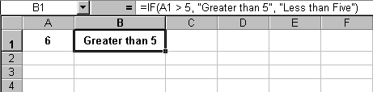

Free
computer Tutorials
|
Free
computer Tutorials
|
|
 HOME
HOME
|
Stay at Home and Learn | |||||
Using If Statements in Excel
Conditional logic(IF) is used quite frequently in modern spreadsheets. But let's start by asking What is Conditional Logic?
Conditional LogicFor our purposes, conditional logic is two words - "IF" and
"Then". You use conditional logic all the time in your daily
life, without realising it. You might say to yourself, "IF I eat
this delicious cream cake THEN my diet will be ruined." You're
using conditional logic to make a decision: IF I do this THEN
that will happen. Some more examples: IF I buy this lovely coat THEN I will look beautiful IF I watch one programme THEN I can tape the other IF I win the lottery THEN I will be happy Those are all example of conditional logic. Excel also uses the IF
word for conditional logic. You can test what is in a cell, and say
what should happen if it is one value rather than another. For example,
suppose cell A1 has the number 6 in it. In cell A2, you can enter an
IF function to test whether cell A1 is above 5 or below 5. IF
it is above 5 THEN one thing happens; IF it is below 5
THEN another thing happens. The correct format to use for the IF function is this: IF( logical_test, value_if_true, value_if_false ) So the IF function takes three arguments: logical test, value
if true, value if false. Let's break those three arguments
down a little more:
Let's clarify all this with a spreadsheet example. So, start a new spreadsheet and do the following:
=IF(A1 > 5, "Greater than Five", "Less than Five")
 It's important you get all the syntax right in your IF function. In other words, don't forget the commas, and the double quote marks around text. But click inside cell A1 and change the number 6 to the number 4. Then press the return key on your keyboard. Excel should put Less than Five in cell B1. Now put the number 5 in cell A1 and see what happens. Nothing happened, right? That's because the IF function is very precise.
You didn't tell Excel what to do if the number equalled 5. To get round this, we can use the Greater Than ( > ) symbol and the Equal symbol together. Like this: A1 >= 5 That says "A1 greater than or equal to 5". When we amend our function, it looks like this: =IF(A1 >= 5, "Greater than or Equal to Five", "Less than Five") You can also test to see if something is Less Than ( < ) or Equal to. You could use this for the formula: =IF(A1 <= 5, "Less than or Equal to Five", "Greater than Five")
=IF( A1 <> 5, "Not 5", "Is 5") So to sum up: after typing IF you tell Excel what you want to
test for. Then you say what should happen if the condition is true.
Then you say what should happen if the condition is false.
In the next part, we'll take a look at Conditional Formatting. Explore Conditional Formatting --> <--Back to the Excel Contents Page
|
||||||
|